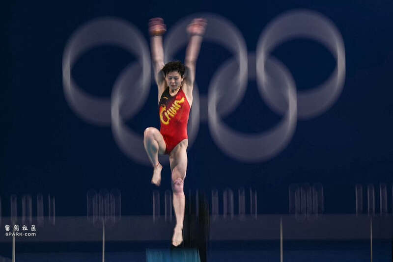
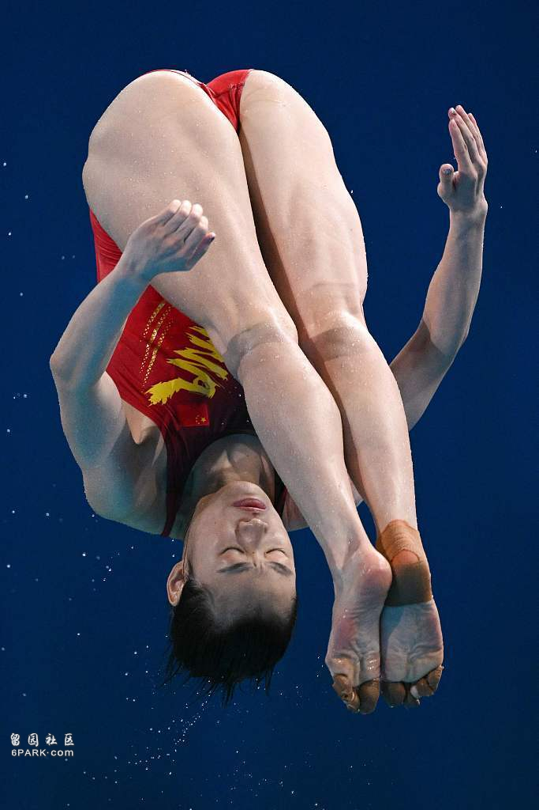
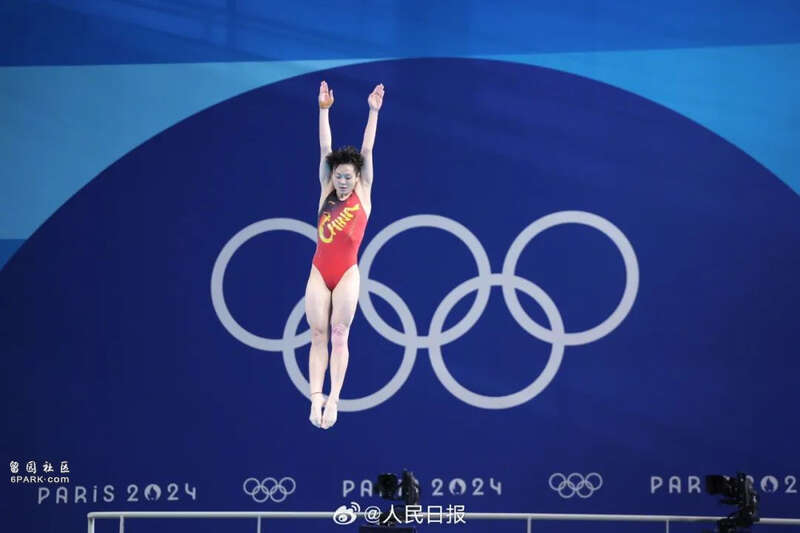
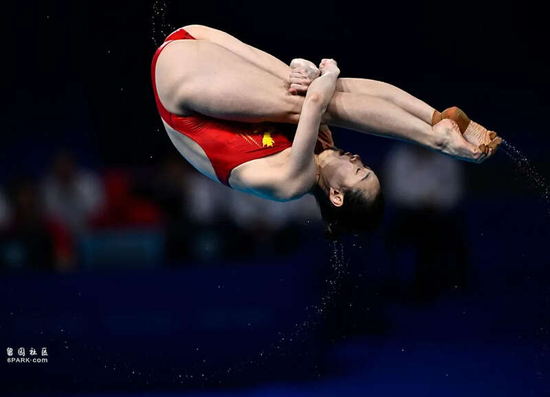
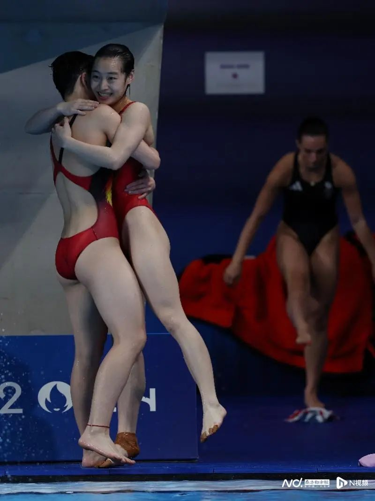

陈艺文
北京时间8月9日晚，巴黎奥运会跳水赛场进行了女子单人三米板决赛，中国选手陈艺文发挥出色，从第一跳开始就保持领先，最终获得金牌，另外一位中国选手昌雅妮尽管在第一跳出现失误，但凭借着过硬的实力一路追赶，最终得到铜牌。
第一跳，昌雅妮出现失误，仅得到42分，排名第12，另外一位中国选手陈艺文发挥出色，获得70.50分排名第一；第二跳，昌雅妮调整状态，得到69.75分，陈艺文继续稳定发挥得到76.5分，继续位列第一；第三跳过后，昌雅妮上升到第7，陈艺文则以领先第二32分的优势继续保持第一。
随后的两跳，昌雅妮继续追赶最终获得第三，而陈艺文始终保持稳定发挥，最终摘得金牌。
由此，中国队已经拿下了本届奥运会8枚跳水金牌中的7金，离包揽8金仅差还未决出的男子单人十米台金牌。

昌雅妮
陈艺文和昌雅妮两人都是生涯首次参加奥运会，但在巴黎奥运会周期，两人的成长有目共睹，在世锦赛、世界杯等大赛上延续了梦之队的统治力。
昌雅妮坦言，“奥运会的竞争和世锦赛等大赛相比并无本质差别，但对于奥运金牌的渴望，又让这一切变得尤为特别。”而奥运的压力，两人扛了下来。
在之前的进行的女双三米板决赛中，两人就作为搭档夺得金牌，为中国跳水队摘得巴黎奥运会首金，打响了开门红。
这枚金牌，也让两人的压力得到了释放。“我们都希望能跳出自己最好的水平，把中国跳水的美展示给大家看。”昌雅妮对记者表示。
事实上，在巴黎奥运会临近时，这对搭档也曾遭遇波折——昌雅妮在3月份肩伤爆发，有一段时间无法训练，这让独自挑起女子三米板重任的陈艺文承受了更多的压力，“会想得特别多，万一跳不好怎么办，万一丢了（金牌）怎么办，这是以前完全不会去考虑的东西。”
好在最终两人顺利站上了奥运舞台，也成功拿下了双人项目的金牌。进入单人项目，两人继续捍卫了中国跳水队的荣誉，也就此帮助中国游泳队实现了对巴黎奥运会单人、双人三米板金牌的包揽。
与此同时，中国跳水队也实现了在该项目的奥运10连冠。
至此，巴黎奥运会已经决出的7枚跳水金牌全部归属于中国队。最后一个项目——男子单人十米台的决赛将在北京时间8月10日晚进行。
北京时间今晚（8月9日）9时，巴黎奥运会女子跳水3米板决赛进行，中国跳水队队员、广东女将陈艺文以总分376分获得金牌。
至此，中国队在奥运会女子3米板跳水项目上，实现了10连冠！

陈艺文获得金牌，为中国拿下十连冠！图据人民日报
另一位中国选手昌雅妮第一跳出现失误，得分排在最后（第12位），后四轮她奋起直追，最终以总分318.75分拿下铜牌！

8月9日，中国选手昌雅妮在比赛中。新华社记者 王鹏 摄
中国队除了在首次参赛的1984年洛杉矶奥运会未获得奖牌外，在此后10届奥运会获得该项目全部金牌，6次包揽冠亚军。
近十届奥运会女子3米板跳水项目冠军：1988汉城、1992巴塞罗那：高敏
1996亚特兰大、2000悉尼：伏明霞
2004雅典、2008北京：郭晶晶
2012伦敦：吴敏霞
2016里约、2020东京：施廷懋
2024巴黎：陈艺文
广东女将第一次参加奥运拿下两枚金牌
这是陈艺文第一次参加奥运会，但她表现出色，至此，她获得了2枚巴黎奥运会金牌！
北京时间7月27日傍晚，在巴黎奥运会开幕后的首个比赛日上，身为中国跳水“梦之队”的成员，陈艺文搭档昌雅妮在女子双人3米板决赛中一骑绝尘，为“梦之队”迎来了开门第一金。报道回顾 ↓↓刚刚！中国第二金，也来了！有广东女将！
“我熬出来了”！广东女将夺金后，一番话让人动容

带伤出战的“文雅组合”。陈艺文、昌雅妮两人搭档出战双人时从未让金牌旁落，她们是三届世锦赛冠军。而在单人比赛中互有胜负，陈艺文夺得福冈世锦赛和布达佩斯世锦赛冠军，昌雅妮则在今年多哈世锦赛上首夺世锦赛该项目冠军。
广东女将陈艺文冠军拿到手软
作为中国跳水队又一名才华横溢的运动员，陈艺文的成长经历颇为励志：她1999年出生于海南，父亲是海南人，母亲则来自跳水之乡广东湛江。
和许多年龄较小时就开始接触专业跳水训练的孩子不同，陈艺文是8岁那年在湛江外婆家接触到这项运动后，觉得很好玩，快9岁时才离家赴广东接受训练，开始专业跳水生涯的。她先后进入过湛江和中山两地的体校，并通过迅速成长被选进广东省体校，正式成为一名职业运动员。
而在备战巴黎奥运会的周期里，陈艺文在各大赛事中屡获佳绩。2021年，她在日本东京跳水世界杯暨奥运会资格赛中勇夺女子3米板和女子双人3米板两项冠军。
2022年，她又在布达佩斯世锦赛上以绝对优势夺得女子3米板冠军，并与昌雅妮搭档赢得女子双人3米板冠军。2023年，她在多场全国跳水锦标赛和世界杯赛事中夺冠，包括在武汉举行的全国跳水锦标赛暨巴黎奥运会、多哈世锦赛选拔赛以及杭州亚运会，都保持不败。到了2024年，她继续保持良好状态，在跳水世界杯总决赛女子3米板决赛中也以优异的成绩夺得冠军。
除了赛场上的出色表现，陈艺文在场外同样备受好评。特别是她通过个人的努力学习，掌握了一口流利的英语，能够与国外选手自如交流，因此在参加国际比赛时，陈艺文有时还会帮助队友客串翻译一职。此外，她在中国队内的人缘也非常好，性格开朗、乐于助人，被誉为国家队中的“开心果”。
昌雅妮赛前四个月曾受伤停训
昌雅妮在巴黎奥运会开赛前四个月曾遭遇严重的肩伤。今年三月的跳水世界杯蒙特利尔站比赛结束之后，昌雅妮因为肩伤被迫休息三周，导致昌雅妮与陈艺文退出了四月在西安举行的跳水世界杯总决赛，这是巴黎奥运会前最重要的一项跳水国际大赛。
昌雅妮在本届奥运会开幕前曾回忆：“我是一个训练不能停的运动员，因为我没什么天赋，只有靠努力才能站稳脚。再苦、再疼、再累都不事儿，但（因伤停训三周）这件事对我是暴击，因为我运动生涯没有停下这么久，放假都没放过这么久。”
但是，她直面困难、战胜困难。四个月后，奥运赛场终于见证了她的王者归来。
恭喜中国队拿下十连冠！为中国“梦之队”姑娘们喝彩！